2.2. Starting the 3D machining wizard
2.3. Define Machining Process data
2.9. Assigning Workpiece Material
2.10. Generating Mesh for Workpiece
2.11. Workpiece Boundary Condition page
In this lab we will demonstrate how to setup turning lab by importing insert geometry in 3D Cutting wizard.
We can open 3D Cutting wizard in two ways:
a. Create a new problem either by selecting File  New Problem or by clicking the New Problem
New Problem or by clicking the New Problem  icon. The Problem Setup window will appear. Select "Integrated Manufacturing Process" radio button and Unit system as "English" using radio button. Define Problem Name as " 3D_turning"
and and make sure the “Show option dialog” check box is turned on (if we do not turn on the “Show option dialog” check box, then we will not get the New Project dialog in MO UI). Then click on
icon. The Problem Setup window will appear. Select "Integrated Manufacturing Process" radio button and Unit system as "English" using radio button. Define Problem Name as " 3D_turning"
and and make sure the “Show option dialog” check box is turned on (if we do not turn on the “Show option dialog” check box, then we will not get the New Project dialog in MO UI). Then click on  button to open a new Problem using the Deform Integrated Manufacturing Process.
button to open a new Problem using the Deform Integrated Manufacturing Process.
Multiple operation wizard will open, at this point user will be prompted to specify a project name (system will create a separate folder with this project name) and title for this session. In this session we will use "3D_turning"
as the project name. Click on  to continue to open the operation. MO wizard will open, add 3D Cutting operation from the Explorer Operations list. Add the operation by clicking on
to continue to open the operation. MO wizard will open, add 3D Cutting operation from the Explorer Operations list. Add the operation by clicking on  button available next to 3D Cutting or by drag and drop into the Operation editor.
button available next to 3D Cutting or by drag and drop into the Operation editor.
b. Create a new problem either by selecting File  New Problem or by clicking the New Problem
New Problem or by clicking the New Problem  icon.
The Problem Setup window will appear. Select "3D Cutting" radio button and Unit system as "English" using radio button (see Fig. 3DTL2.1.).
Define Problem Name as " 3D_turning" and click on
icon.
The Problem Setup window will appear. Select "3D Cutting" radio button and Unit system as "English" using radio button (see Fig. 3DTL2.1.).
Define Problem Name as " 3D_turning" and click on  button to open a new Problem with 3D Cutting operation in MO wizard.
button to open a new Problem with 3D Cutting operation in MO wizard.
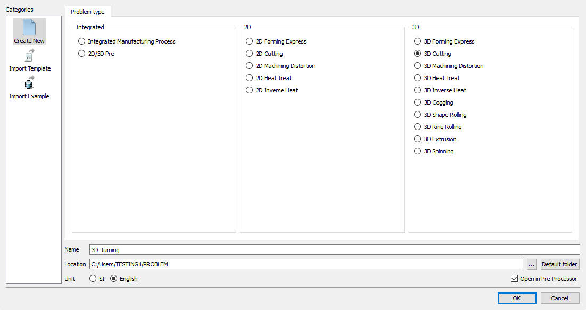
Problem Setup Page
Under the ‘Process’ menu, Define Cutting type as 'Turning', enter the Environment Heat Transfer temperature as 68F and use default Convection coefficient 7.7e-06 BTU/sec/in^2/F.
Select the Cutting speed (v) as 500 in/sec, feed rate (f) as 0.012 in/rev and Depth of cut (d) as 0.02 in (see Fig. 3DTL2.2.). Alternatively user can also specify rotational speed of the workpiece and part diameter instead of surface speed. Then click on  until Tool page.
until Tool page.
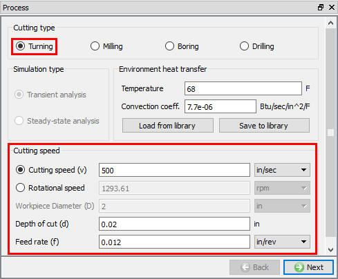
Process page
In ‘Tool’ page, enter the tool temperature as 68F. User can import the cutting edge geometry from a previously defined simulation keyword file or a database file using Import Object  option. For this lab we will import cutting edge geometry using the import geometry option. Click
option. For this lab we will import cutting edge geometry using the import geometry option. Click  to import the Insert Geometry. Click on
to import the Insert Geometry. Click on  and import DNMA432 geometry from DEFORM installation \3D\Machining\Insert\EN folder. Select the Cutting Face direction as " Y ", click
and import DNMA432 geometry from DEFORM installation \3D\Machining\Insert\EN folder. Select the Cutting Face direction as " Y ", click  and select the Reference point and click
and select the Reference point and click  . (See Fig. 3DTL2.3.).
. (See Fig. 3DTL2.3.).
In this lab we will position the Cutting tool manually using positioning option. Go to the Controls page by clicking on the "Control" option in the Operation tree.
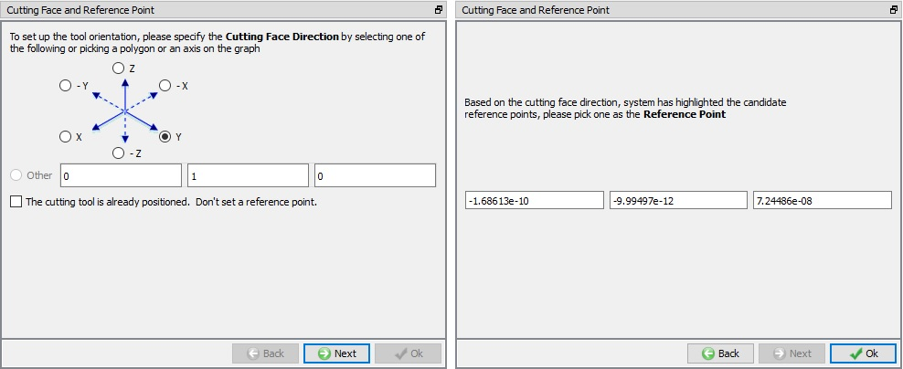
Tool geometry orientation selection page
We will use a -5 degree face rake and a -5 degree side rake on the tool. Click on  button in the Controls page. In the Object Positioning page select position and specify a rotation about the +X axis of "-5" degrees. Click
button in the Controls page. In the Object Positioning page select position and specify a rotation about the +X axis of "-5" degrees. Click  . Now specify a rotation of "5" degrees
around the +Z axis and click
. Now specify a rotation of "5" degrees
around the +Z axis and click  again. Click on
again. Click on  to close the Object Positioning page. Go back to the Tool
material page by clicking on the "Tool material" option under Tool in the Operation tree.
to close the Object Positioning page. Go back to the Tool
material page by clicking on the "Tool material" option under Tool in the Operation tree.
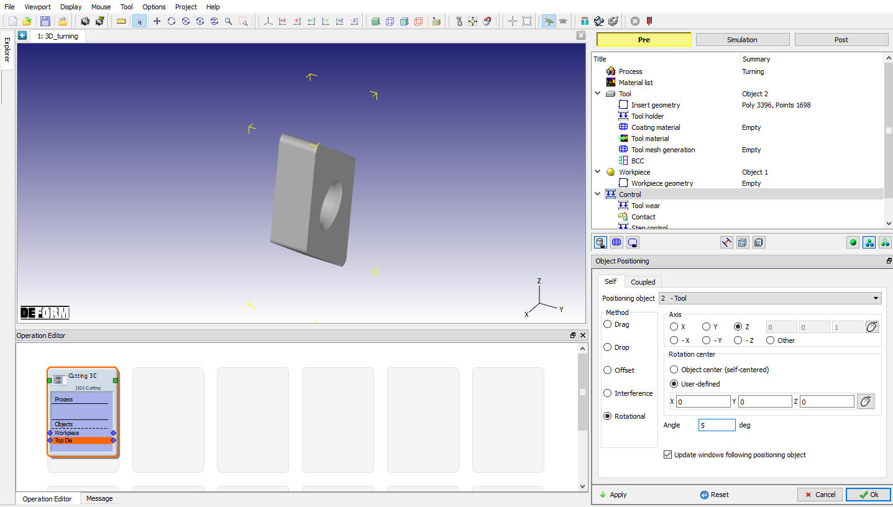
Cutting Tool positioning
In the 'Tool material’ page, choose the ‘Load material data from library’  option, select ‘Tool Material' category
and ‘Carbide (15% Cobalt)” (see Fig. 3DTL2.5.). ‘Load’ this material and click
option, select ‘Tool Material' category
and ‘Carbide (15% Cobalt)” (see Fig. 3DTL2.5.). ‘Load’ this material and click  to generate Mesh.
to generate Mesh.
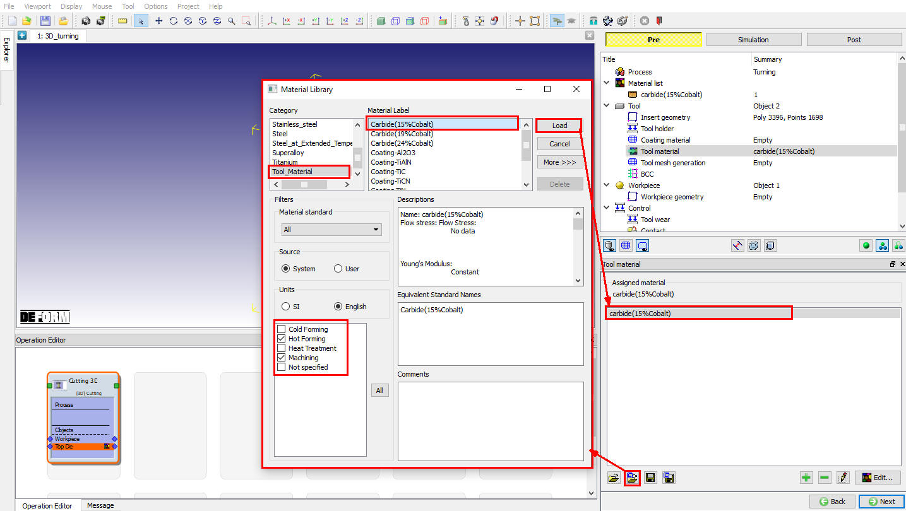
Loading Tool material
After the tool geometry is generated, generate mesh with Relative mesh type with element size ratio of 7 and 10000 target number of elements as shown in Fig. 3DTL2.6. Click on  to complete mesh generation for the workpiece. Click
to complete mesh generation for the workpiece. Click  to BCC page. In BCC observe the default Heat exchange
BCC assigned for tool and click
to BCC page. In BCC observe the default Heat exchange
BCC assigned for tool and click  to Workpiece page.
to Workpiece page.
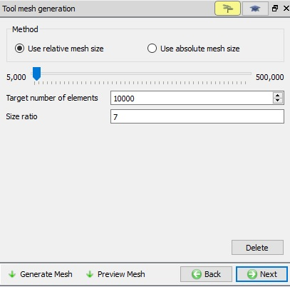
Generating Tool mesh
In the ‘Workpiece' page define workpiece as a plastic object with a temperature as 68F and click  to proceed. Click on the
to proceed. Click on the  label in the ‘Workpiece geometry’ page. In the 'Workpiece Geo Primitive' page specify the workpiece details. Depending upon the workpiece diameter user can specify either a flat model or a curved model. The template will prompt for the
related data, and will generate the workpiece setup in the display area. For the current lab select the ‘Simplified mode’ with a length of 0.3 in. Click on to create the workpiece geometry (see Fig. 3DTL2.7.). Click
label in the ‘Workpiece geometry’ page. In the 'Workpiece Geo Primitive' page specify the workpiece details. Depending upon the workpiece diameter user can specify either a flat model or a curved model. The template will prompt for the
related data, and will generate the workpiece setup in the display area. For the current lab select the ‘Simplified mode’ with a length of 0.3 in. Click on to create the workpiece geometry (see Fig. 3DTL2.7.). Click  to close this page and click
to close this page and click  to go to the Object material page.
to go to the Object material page.
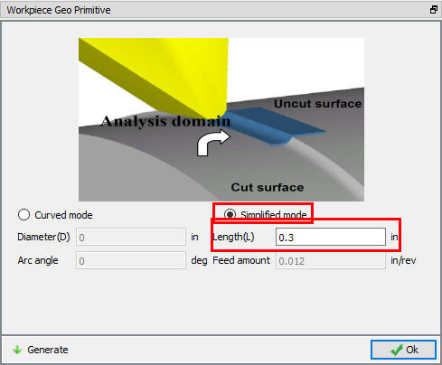
Defining Workpiece geometry
In 'Object Material’ page, choose the ‘Load material data from library’  option, select ‘Steel’ category and ‘AISI-1045 (machining)’
(see Fig. 3DTL2.8.). ‘Load’ this material and click
option, select ‘Steel’ category and ‘AISI-1045 (machining)’
(see Fig. 3DTL2.8.). ‘Load’ this material and click  to
generate Mesh.
to
generate Mesh.
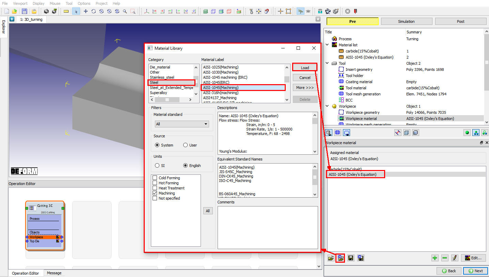
Loading Workpiece material form Library
After the work piece geometry is generated, generate mesh with element size ratio of 7, and minimum element size of 0.0024 inch.(Fig. 3DTL2.9.).
Click on  to complete mesh generation for the workpiece. Click on
to complete mesh generation for the workpiece. Click on  to BCC page.
to BCC page.
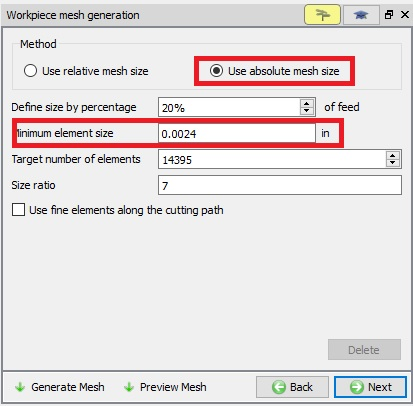
Workpiece Mesh page
In the ‘View Workpiece BCC’ menu, check the boundary conditions imposed on workpiece by the system (see Fig. 3DTL2.10.),
and click  to Controls page. Note the velocity BCC assigned to the bottom surfaces away from the cutting surfaces to prevent workpiece from flying. Heat Exchange with BCC is assigned
to all surfaces and temperature BCC is assigned for all surfaces except cutting surfaces.
to Controls page. Note the velocity BCC assigned to the bottom surfaces away from the cutting surfaces to prevent workpiece from flying. Heat Exchange with BCC is assigned
to all surfaces and temperature BCC is assigned for all surfaces except cutting surfaces.
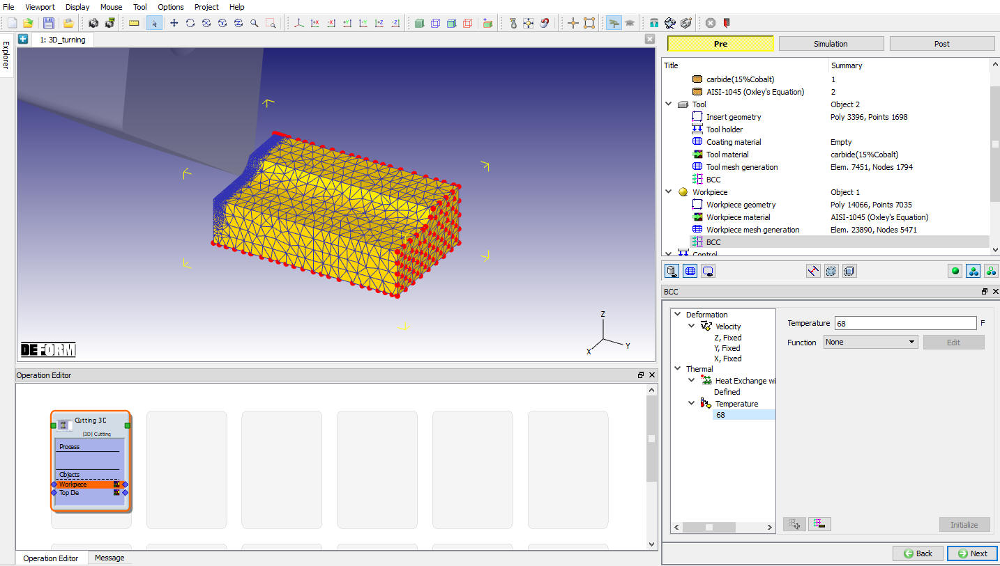
Assigned Temperature Boundary Condition for workpiece
In the ‘Controls’ menu, click on  , Check the position of Insert. If Insert is not contact with workpiece using
, Check the position of Insert. If Insert is not contact with workpiece using  method position the Insert and click
method position the Insert and click  .
.
In this lab we are not calculating the tool wear so, uncheck the Define model to calculate tool wear check box (see Fig. 3DTL2.11.), Click
 to contact page.
to contact page.
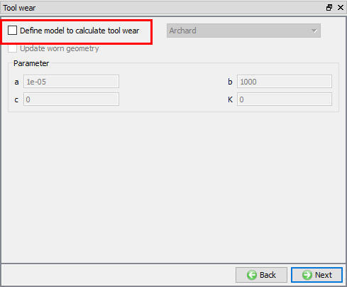
Tool wear setup window
In Contact page, use default relations. Click on Tool - Workpiece relation  button and define shear friction factor as 0.5 and the interface heat transfer coefficient as 0.01359 BTU/sec/in^2/F (as shown in Fig. 3DTL2.12.), click on
button and define shear friction factor as 0.5 and the interface heat transfer coefficient as 0.01359 BTU/sec/in^2/F (as shown in Fig. 3DTL2.12.), click on  to generate contact. Click
to generate contact. Click  to Step Control page.
to Step Control page.
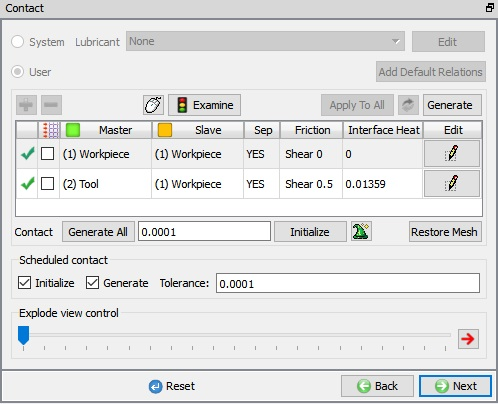
Contact page
Check the ‘Simulation Controls’ and set the length of cut as ‘0.3 in' (Full length of cut) and leave the rest as default values and proceed to generate the Database.
In Generate DB page, click on the  button to generate the database. Observe the message in Message tab informing database generation status.
button to generate the database. Observe the message in Message tab informing database generation status.
Once the database has been generated switch to the Simulation mode by clicking on  button above the operation tree. Click on the
button above the operation tree. Click on the  action label to open the Run Options dialog as shown in Fig. 3DTL2.13. Use the default Continue Run option
to select “Continue from the last step” (from step -1) option and then select the Simulation mode as Interactive radio button. Click on
action label to open the Run Options dialog as shown in Fig. 3DTL2.13. Use the default Continue Run option
to select “Continue from the last step” (from step -1) option and then select the Simulation mode as Interactive radio button. Click on  button
to run the simulation.
button
to run the simulation.
To define MPI settings, click on  button, Run Options window will expand and displays options to define MPI settings for simulation (max number of processors that can be defined depend
on your 3D MPI license).
button, Run Options window will expand and displays options to define MPI settings for simulation (max number of processors that can be defined depend
on your 3D MPI license).
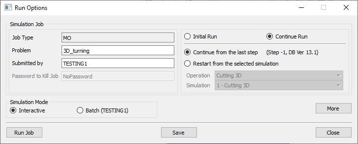
Run Simulation Window
Monitor the progress of the simulation by looking at the Simulation Message and Simulation Log tab, making sure that the  option is checked. User can view the cutting process
as the simulation proceeds to the specified cutting length from Simulation graphics.
option is checked. User can view the cutting process
as the simulation proceeds to the specified cutting length from Simulation graphics.
When the simulation is completed, review the results by switching to Post mode using the  button above the Simulation tool bar. Play through the steps of the simulation and look how
the chip has been formed during cutting process.
button above the Simulation tool bar. Play through the steps of the simulation and look how
the chip has been formed during cutting process.